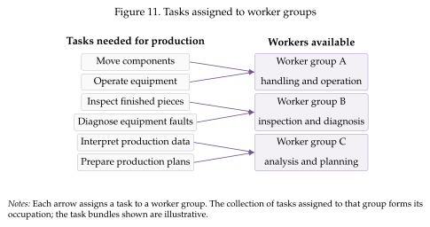
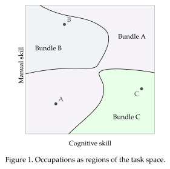
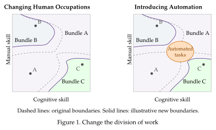

Occupations as task bundles¶
Before we turn to the mathematical derivations of the canonical task model we will consider a more general setting to understand how tasks help us think about how work is organized. At the core of this is the concept of occupations.
An occupations is simple a bundle of tasks performed by a type of worker
While not two workers ever perform the exact same combination of tasks, we can see regularities that lead us to label some of these task-bundles as occupations.
Take the work of a nurse. It involves monitoring patients, administering treatment, keeping records, and communicating with patients and other medical staff. Some of these tasks are similar to the tasks that a doctor performs, but they can differ in their complexity---the degree of skill or knowledge required to perform them. Some of the tasks were actually previously performed by doctors, but the assignment has changed over time.
What, then, determines which activities belong together in a job, and why does that bundle change?
Changes in the skill composition of workers are part of the reason. The supply of nurses and doctors has changed over time, as has the training they each get. But technology also changes. Software that reduces the work needed to keep records changes part of the job. New surgical techniques reduce the time-demands on doctors, but also allow them to perform a wider range of procedures. This, in turn, entails new tasks for nurses.
Similar changes take place in manufacturing, where plant operators face industrial robots who can perform task previously assigned to workers, but that require maintenance and allow workers to perform new tasks. Engineers face new software that changes the way they design and organize operation in the plant. An occupation is therefore more than a fixed label attached to a worker. To understand its response to technology, we need to explain how its tasks are bundled in the first place.
The manager's assignment problem¶
Imagine a manager organizing production in a plant (or a hospital). The plant needs components moved, equipment operated, faults diagnosed, quality checked, and production plans prepared. These activities draw on different combinations of skills. Operating equipment may require manual dexterity as well as attention and judgment; diagnosing a fault may require both practical experience and analytical reasoning.
The problem of the manager is to figure who (or what) should be assigned each task. Part of the problem is that workers also bring different combinations of skills or abilities. Someone adept at handling equipment need not be equally adept at interpreting data, and an excellent analyst need not be the best person to handle a delicate component. There need not be a single ranking from the least to the most skilled worker that applies to every activity. This issue reflects the multidimensional nature of the skills involved in production.
Giving every activity to the person who performs it best in isolation may be impossible: that person's time is limited and is also useful elsewhere. A good assignment uses the available workforce to produce as much as possible, balancing the benefits of a good match against the need to cover the other tasks.

The collection of tasks assigned to each worker group is the group's occupation. Figure Figure 4 gives an example of this. Crucially, the bundle is itself outcome of organizing production, rather than a restriction that the manager must take as given. So, as technology changes so does the assignment. The same worker can keep some tasks and acquire or lose others.
A map of tasks and occupations¶
We can think of the assignments of tasks to workers more generally, as in Figure~Figure 5 originally from Ocampo (2026). For example, think of tasks that require cognitive and manual skills to be performed. There are many tasks, each with a different composition of skills. A location in the square describes the cognitive and manual skills involved in a given task. Similarly, workers differ in the skills they posses. The dots in the square show the skill combinations of three worker types. Occupations are formed by the bundles of tasks assigned to each type of worker.

How good an assignment is depends on the skill mismatch between workers and the tasks in their occupation and the availability of labor. We can see that as the distance from a task to a worker's skill combination. Technology determines how costly different kinds of mismatch are, and worker availability constrains the assignment; we cannot simply assign every task to the closest worker. It might be that cognitive mismatch matters more than manual mismatch, and having more skill than a task needs may have a different effect from having too little. The boundaries of the bundles summarize the resulting division of work.
Technology can redraw occupations¶
We will use this framework to think about how technology changes occupations. Software used by engineers, for example, may change which parts of analysis, checking, and planning they perform and which parts are done by other workers. The left panel of Figure~Figure 6 illustrates a change in the boundaries between human occupations. The worker skills stay fixed, while some tasks change hands because technology has changed how skill mismatch affects production. Changes in training or in the availability of different workers can also alter the assignment by altering workers' skills.
The framework also lets us ask how automation displaces workers from tasks. Self-checkout machines take over some cashier tasks, while trading and accounting software take over some tasks of stockbrokers and accountants. Most notably, industrial robots can take particular positions in an assembly process. These changes can remove part of an occupation's work without removing the whole occupation.

In the right panel, tasks in the orange region are performed by machines or software instead of workers. Workers displaced from these tasks may move into other activities, changing the bundles performed by neighboring workers. This introduces an indirect transmission mechanism: workers whose own tasks are not automated can still be affected by the reassignment as highlighted in (Ocampo 2026; Acemoglu and Restrepo 2022).